国・地域の見分け方
- ドメインは.dk
- ナンバープレートは白か黄色(by Geotips )
- ボラードには黄色の反射板と赤色の線がある
- 丸いカーブのパイプで作られた道路看板がある
- 「Ø・ø」の文字はデンマークとノルウェーでのみ使用される
- 通り名にvej・høje・havenが多い（英語ではroad・mound・garden/道・山・庭）？
- デンマークのポスト業界でシェアの高いAlluxの丸いカーブのふたがあるポストが家の近くに設置されている
見つかる標識
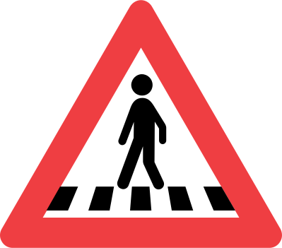
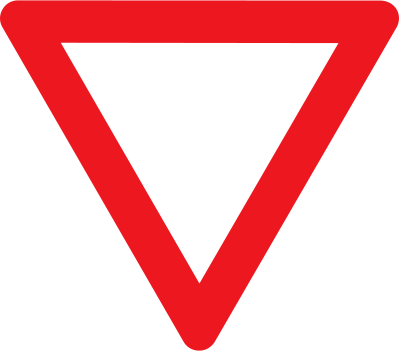
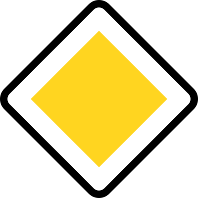
 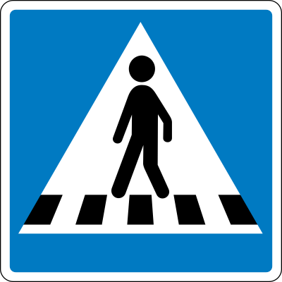
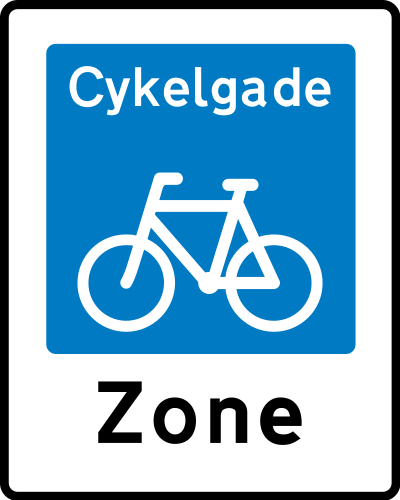
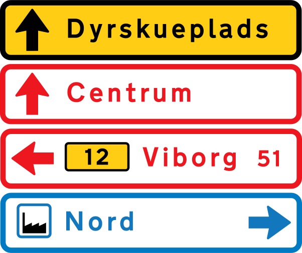
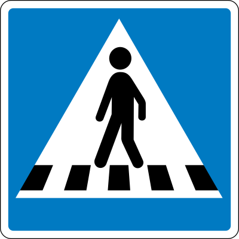
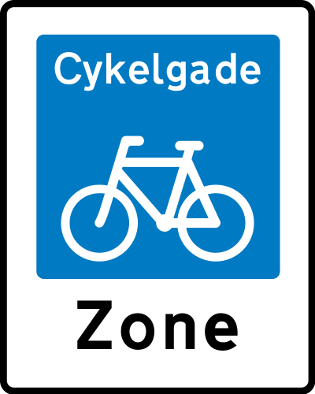
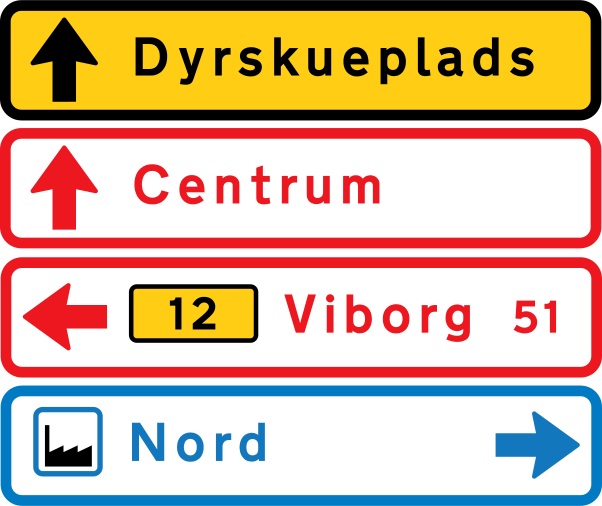
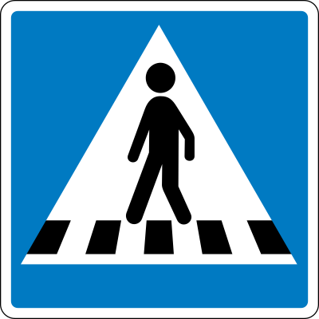
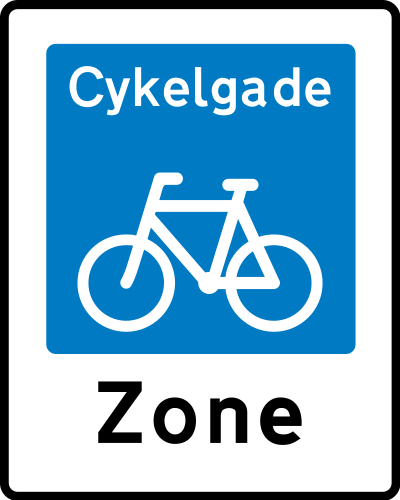
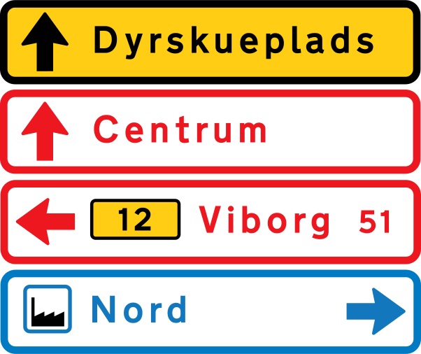
デンマークのOdenseにある会社のAlluxというブランドのポストが一般的。おしゃれで丸いふた 。陸続きの ドイツでも見つかる。


丸いカーブのパイプが多い。通り名の看板も丸いパイプ。オランダなどはパイプが四角いことが多い。～vejはデンマーク語で～通りの意味 (参考文献 vej)。

ボラードには黄色の反射板と赤色の線がある 。上部のオレンジ色のテープは色がはがれていることもあるので注意(画像出典) 。

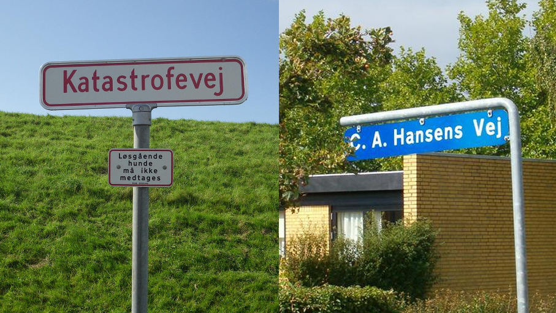
家の前に旗を揚げるポールがあり、祝日や誕生日に旗を揚げることがある (参考文献 Quirks of Denmark)。掲げられる旗も極端に細い 。

ナンバープレートは黄色も存在するので オランダと間違えないように注意 。
public domain
public domain
public domain
丸いカーブのパイプが多い。また横断歩道の標識の雰囲気が他と違う。
州・地域の絞り込み
- ボーンホルム島の看板では『Nexø』か『Rønne』までの距離が書かれているケースがほとんど (from Wikipedia 『ボーンホルム島』)
- レス島という離島に伝統的な木造建築がある(from Wikipedia 『Læsø』)
- アンホルト島という離島がある
- 島の東側は灯台の燃料として木を伐採してしまったため砂地が広がっている
- 道端にも砂がたまっていることがわかる (参考文献 Anholt (Denmark))
- デンマークの自治領である グリーンランド・ フェロー諸島が出ることがある
『Nexø』と『Rønne』のどちらかが書いてある看板がほとんど。小さめの自転車ルートの看板にも書いてある (参考文献 『Rønne - Wikipedia』)。
レス島という離島に伝統的な木造建築がある(from Wikipedia 『Læsø』)。『Byrum』・『Vesterø Havn』・『Østerby Havn』などの地名が看板に見つかる ならレス島に行ってみる。

オリジナル画像の出典
- ボラードの画像は以下の画像を加工しています
- By Guillaume Baviere from Copenhagen, Denmark - 2015-04-11, CC BY-SA 2.0, Link
-
By © 2009 by Tomasz Sienicki [user: tsca, mail: tomasz.sienicki at gmail.com] - Photograph by Tomasz Sienicki (Own work), CC BY 3.0, Link
- By Guillaume Baviere from Copenhagen, Denmark - 2015-04-11, CC BY-SA 2.0, Link
- By © 2009 by Tomasz Sienicki [user: tsca, mail: tomasz.sienicki at gmail.com] - Photograph by Tomasz Sienicki (Own work), CC BY 3.0, Link
コメント欄